The work
Studio portraits, musicians mid-song, skaters, small businesses, and the people I meet along the way. All of it shot on my Fujifilm.
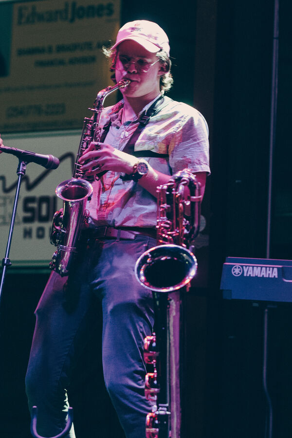
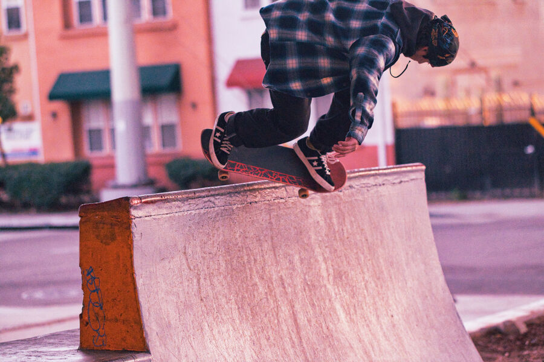
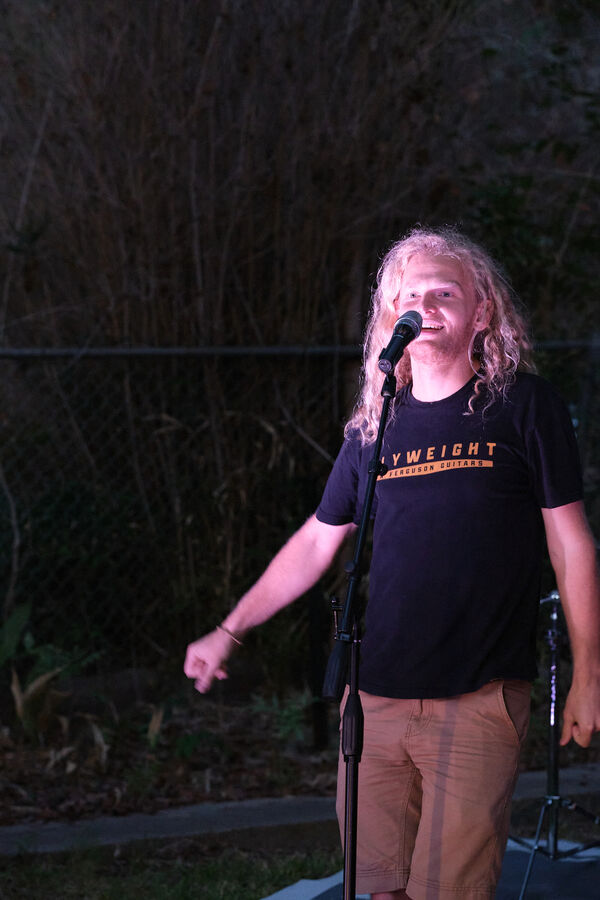
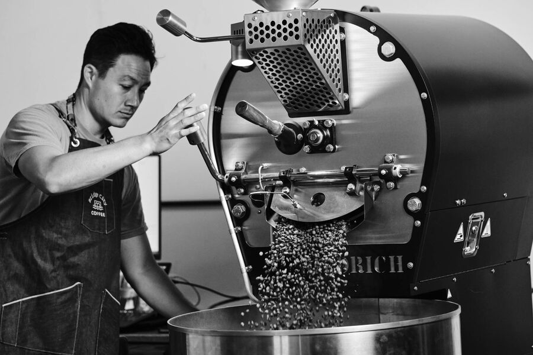
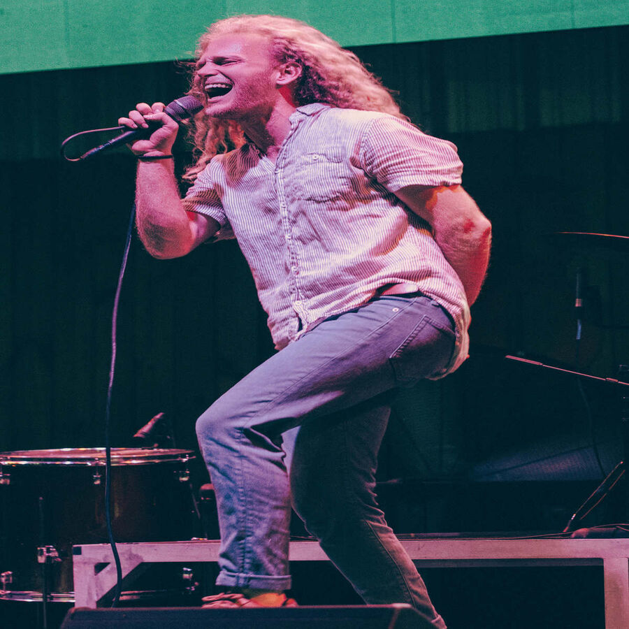
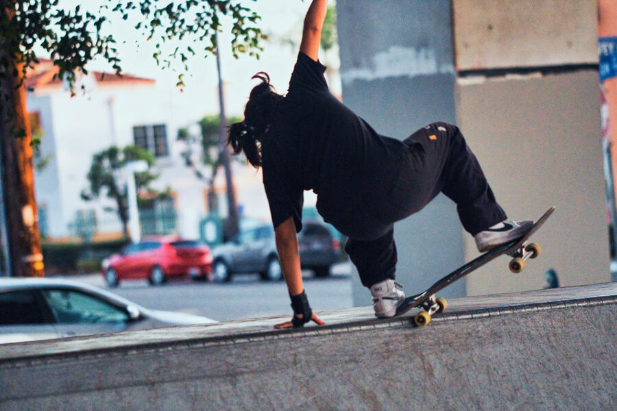
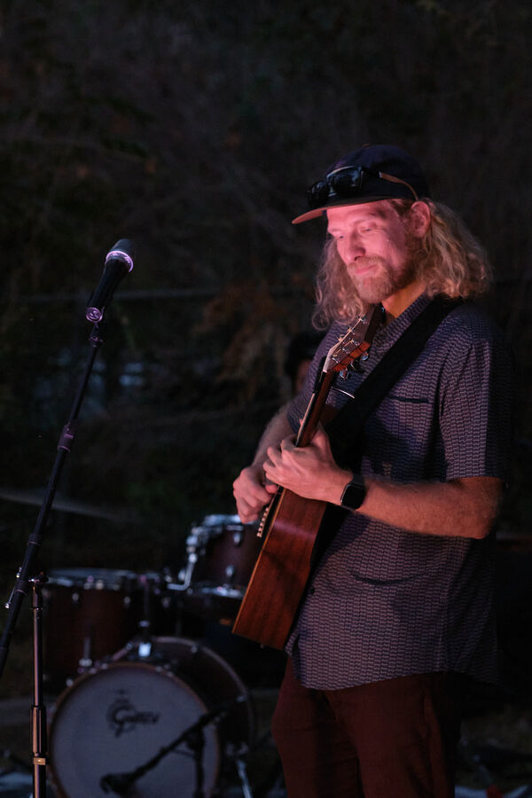
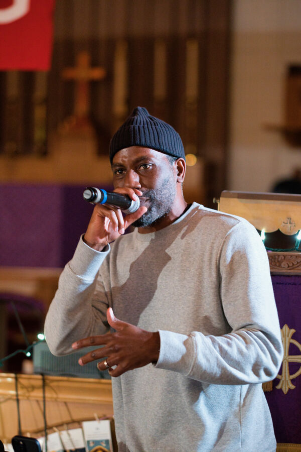
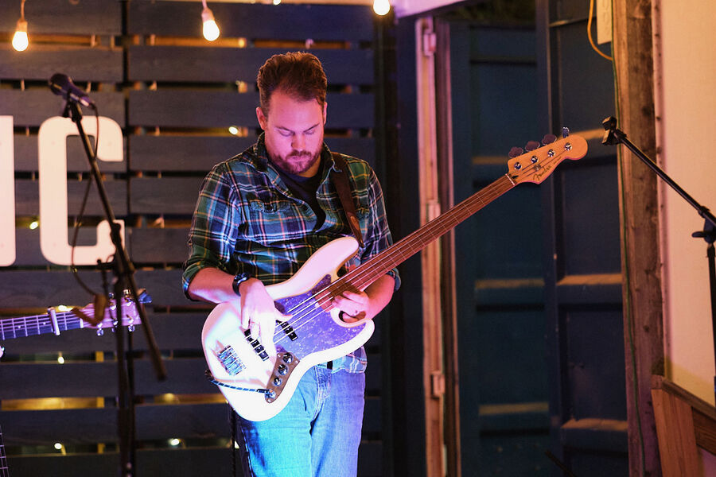
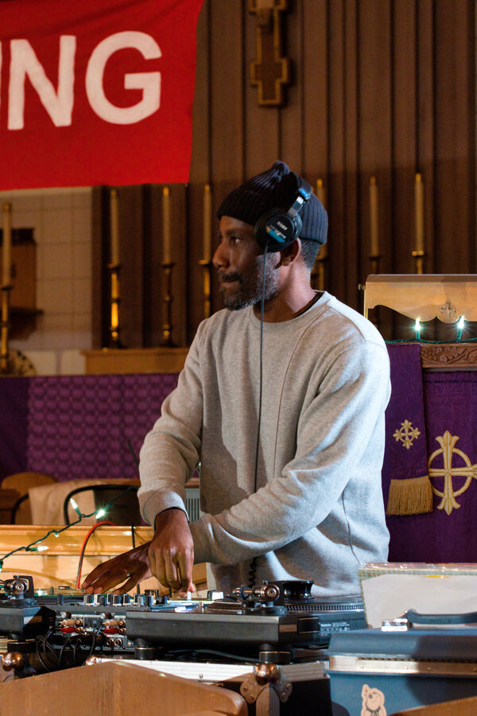
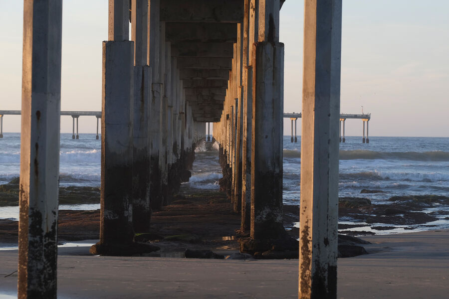
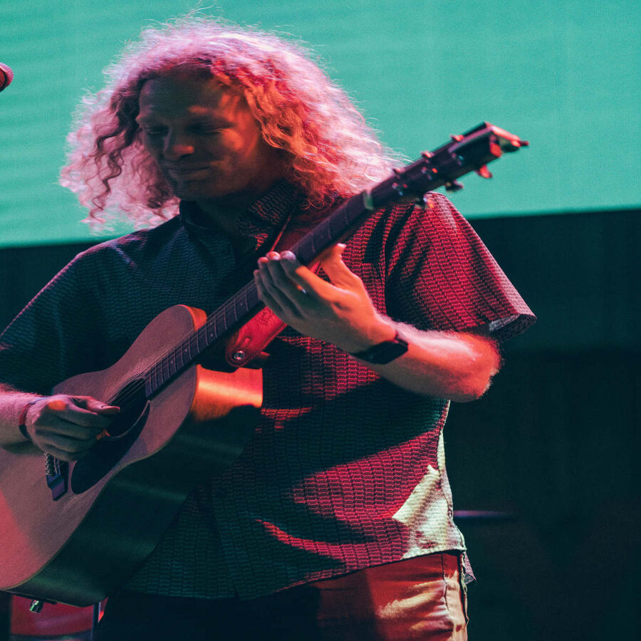

Your turn
Sessions start at $250. You don't need to be photogenic. That part is my job.